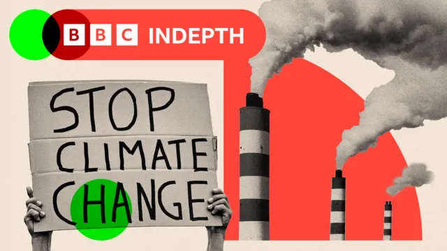
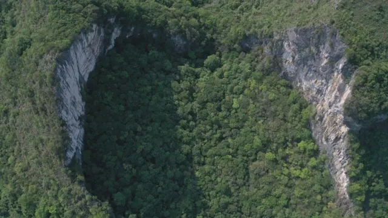

| The viral fashion show by slum children that is wowing India A video of a fashion shoot in India has gone viral and unexpectedly turned a group of underprivileged school children into local celebrities.The footage shows the children, most of them girls between the ages of 12 and 17, dressed in red and gold outfits fashioned from discarded clothes.The teenagers designed and tailored the outfits and also doubled up as models to showcase their creations, with the grubby walls and terraces of the slum providing the backdrop for their ramp walk.The video was filmed and edited by a 15-year-old boy.The video first appeared earlier this month on the Instagram page of Innovation for Change, a non-governmental organisation (NGO) in the city of Lucknow.The charity works with about 400 children from the city's slums, providing them free food, education and job skills. The children featured in the shoot are students of this NGO.Mehak Kannojia, one of the models in the video, told the BBC that she and her fellow students closely followed the sartorial choices of Bollywood actresses on Instagram and often duplicated some of their outfits for themselves."This time, we decided to pool our resources and worked as a group," the 16-year-old said.For their project, they chose wisely - a campaign by Sabyasachi Mukherjee, one of India's top fashion designers who has dressed Bollywood celebrities, Hollywood actresses and billionaires. In 2018, Kim Kardashian wore his sequinned red sari for a Vogue shoot.Mukherjee is also known as the "king of weddings" in India. He has dressed thousands of brides, including Bollywood celebrities such as Anushka Sharma and Deepika Padukone. Priyanka Chopra married Nick Jonas in a stunning red Sabyasachi A video of a fashion shoot in India has gone viral and unexpectedly turned a group of underprivileged school children into local celebrities.The footage shows the children, most of them girls between the ages of 12 and 17, dressed in red and gold outfits fashioned from discarded clothes.The teenagers designed and tailored the outfits and also doubled up as models to showcase their creations, with the grubby walls and terraces of the slum providing the backdrop for their ramp walk.The video was filmed and edited by a 15-year-old boy.The video first appeared earlier this month on the Instagram page of Innovation for Change, a non-governmental organisation (NGO) in the city of Lucknow.The charity works with about 400 children from the city's slums, providing them free food, education and job skills. The children featured in the shoot are students of this NGO.Mehak Kannojia, one of the models in the video, told the BBC that she and her fellow students closely followed the sartorial choices of Bollywood actresses on Instagram and often duplicated some of their outfits for themselves."This time, we decided to pool our resources and worked as a group," the 16-year-old said.21 hrs ago | Asia |
Just how big was Donald Trump’s election victory? Republican President-elect Donald Trump has said his election victory handed him an “unprecedented and powerful” mandate to govern.He beat Democratic rival Kamala Harris in all seven closely watched swing states, giving him a decisive advantage overall.Trump’s party has also won both chambers of Congress, giving treturning president considerable power to enact his agenda.He has broadened his appeal across nearly all groups of voters since his 2020 defeat. And in doing so he pulled off a comeback unmatched by any previously defeated president in modern history.ut the data suggests it was a much closer contest than he and his allies are suggesting.His communications director Steven Cheung has called it a "landslide" victory. Yet it emerged this week that his share of the vote has fallen below 50%, as counting continues."It feels grandiose to me that they're calling it a landslide," said Chris Jackson, senior vice-president in the US team of polling firm Ipsos.The Trump language suggested overwhelming victories, Jackson said, when in fact it was a few hundred-thousand votes in key areas that propelled Trump back to the White House.That is thanks to America’s electoral college system, which amplifies relatively slender victories in swing states.Here are three ways to look at his win.With 76.9 million votes and counting, Trump won what is known as the popular vote, according to the latest tally by the BBC’s US partner, CBS News.That means he scored more votes than Harris (74.4 million), or any other candidate. No Republican has managed that feat since 2004.But as vote-tallying continues in some parts of the US, he has now slipped a fraction of a percentage point below 50% in his vote share. He is not expected to make up the gap as counting goes on in places like Democratic-leaning California.This was also the case in 2016, when Trump beat Hillary Clinton to the presidency despite losing the popular vote - having notched only 46% of the overall ballots cast. Republican President-elect Donald Trump has said his election victory handed him an “unprecedented and powerful” mandate to govern.He beat Democratic rival Kamala Harris in all seven closely watched swing states, giving him a decisive advantage overall.Trump’s party has also won both chambers of Congress, giving the returning president considerable power to enact his agenda. He has broadened his appeal across nearly all groups of voters since his 2020 defeat. And in doing so he pulled off a comeback unmatched by any previously defeated president in modern history. But the data suggests it was a much closer contest than he and his allies are suggesting.His communications director Steven Cheung has called it a "landslide" victory. Yet it emerged this week that his share of the vote has fallen below 50%, as counting continues."It feels grandiose to me that they're calling it a landslide," said Chris Jackson, senior vice-president in the US team of polling firm Ipsos.The Trump language suggested overwhelming victories, Jackson said,when in fact it was a few hundred-thousand votes in key areas that propelled Trump back to the White House.16 hrs ago | Us & Canada |
Will China step up if Trump takes a step back on climate change?  The WhatsApp message was from the chief negotiator of one of the most powerful countries at the COP climate gathering. Could I stop by for a chat, he asked.As his team hunched over computers eating takeaway pizza, he raged about the obstructionist behaviour of many of the other teams at the conference.So far, so normal. Others had been saying versions of this all week – that this was the worst COP ever; that negotiating texts, which are meant to get smaller as deadlines approached, were in fact ballooning; that COP in its current form might be dead in the water…Looming over it all was the prospect of US president-elect Donald Trump withdrawing the US from the COP process when he takes office for a second time. He has called climate action a “scam” and, at his victory celebration in West Palm Beach earlier this month, vowed to boost US oil production beyond its current record levels, saying, “We have more liquid gold than any country in the world”.But there was one positive: China.“It's the only bright spot in all of this is,” the chief negotiator told me. Not only was its negotiating style markedly different to previous years, but he also observed that, as he puts it, “China could be stepping forward.”Another sign that this may be the case came at the start of the conference, when China made public details of its climate funding. Traditionally, China has released minimal information about its climate policies and plans, so it came as a surprise when, for the first time, officials said they have paid developing countries more than $24 billion for climate action since 2016. “That’s serious money, almost nobody else is at that level,” one COP insider told me.It is a “notable signal”, says Li Shuo, a director of China Climate Hub, “as it’s the first time that the Chinese government has laid out a clear figure in terms of how much they have been providing.”If these are indeed signs that China plans to take a more central role in the future, just as the US is stepping back, it would mark a tectonic shift in the COP process.How that tectonic shift could lookHistorically, Western countries – particularly the US and EU – have provided the momentum, cheered on by smaller climate-vulnerable nations. The difference in the way the talks play out if China steps forward will be marked.Jonathan Pershing, program director of environment at the William and Flora Hewlett Foundation, has been to every COP and understands better than most the behind-the-scenes bartering, bullying and brinkmanship that makes or breaks deals at summits. He says that China won’t lead from the front, like the US and Europe.“They're more cautious players than that. It may be that they're leading with Chinese characteristics, which is what they might say themselves.” The WhatsApp message was from the chief negotiator of one of the most powerful countries at the COP climate gathering. Could I stop by for a chat, he asked.As his team hunched over computers eating takeaway pizza, he raged about the obstructionist behaviour of many of the other teams at the conference.So far, so normal. Others had been saying versions of this all week – that this was the worst COP ever; that negotiating texts, which are meant to get smaller as deadlines approached, were in fact ballooning; that COP in its current form might be dead in the water…Looming over it all was the prospect of US president-elect Donald Trump withdrawing the US from the COP process when he takes office for a second time. He has called climate action a “scam” and, at his victory celebration in West Palm Beach earlier this month, vowed to boost US oil production beyond its current record levels, saying, “We have more liquid gold than any country in the world”.But there was one positive: China. “It's the only bright spot in all of this is,” the chief negotiator told me. Not only was its negotiating style markedly different to previous years, but he also observed that, as he puts it, “China could be stepping forward.”1 day ago | BBC In Depth |
A week of massive changes in Ukraine war - and why they all matter The stakes have never been higher in the Ukraine-Russia war.In the week that saw the conflict pass its 1000th day, Western powers substantially boosted Ukraine's military arsenal - and the Kremlin made its loudest threats yet of a nuclear strike.Here is how the last week played out - and what it means.Late on Sunday night, reports emerged that outgoing US President Joe Biden had given Ukraine permission to use longer-range ATACMS missiles to strike targets inside Russia.The move marked a major policy change by Washington - which for months had refused Ukraine’s requests to use the missiles beyond its own borders.After the decision was leaked to the press, a volley of ATACMS missiles were fired by Ukraine into Russia’s Bryansk region.The Kremlin said six were fired, with five intercepted, while anonymous US officials claimed it was eight, with two intercepted.Whatever the specifics, this was a landmark moment: American-made missiles had struck Russian soil for the first time in this war.Then on Wednesday, Ukraine launched UK-supplied Storm Shadow missiles at targets in Russia’s Kursk region - where Ukrainian troops have seized a roughly 600-sq km (232 sq mile) patch of Russian territory.Later in the week, Biden added the final element of a ramped-up weapons arsenal to Ukraine by approving the use of anti-personnel landmines.Simple, controversial, but highly-effective, landmines are a crucial part of Ukraine’s defences on the eastern frontline - and it is hoped their use could help slow Russia's advance.With three swift decisions, over a few seismic days, the West signalled to the world that its support for Ukraine was not about to vanish.If Ukraine’s western allies raised the stakes this week - so too did Moscow.On Tuesday, the 1000th day of the war, Putin pushed through changes to Russia's nuclear doctrine, lowering the threshold for the use of nuclear weapons.The doctrine now says an attack from a non-nuclear state, if backed by a nuclear power, will be treated as a joint assault on Russia.The Kremlin then took its response a step further by deploying a new type of missile - "Oreshnik" - to strike the Ukrainian city of Dnipro.Putin claimed it travelled at 10 times the speed of sound - and that there are "no ways of counteracting this weapon".Most observers agree the strike was designed to send a warning: that Russia could, if it chose, use the new missile to deliver a nuclear weapon. The stakes have never been higher in the Ukraine-Russia war.In the week that saw the conflict pass its 1000th day, Western powers substantially boosted Ukraine's military arsenal - and the Kremlin made its loudest threats yet of a nuclear strike.Here is how the last week played out - and what it means.Late on Sunday night, reports emerged that outgoing US President Joe Biden had given Ukraine permission to use longer-range ATACMS missiles to strike targets inside Russia.The move marked a major policy change by Washington - which for months had refused Ukraine’s requests to use the missiles beyond its own borders.After the decision was leaked to the press, a volley of ATACMS missiles were fired by Ukraine into Russia’s Bryansk region.The Kremlin said six were fired, with five intercepted, while anonymous US officials claimed it was eight, with two interceptedWhatever the specifics, this was a landmark moment: American-made missiles had struck Russian soil for the first time in this war.Then on Wednesday, Ukraine launched UK-supplied Storm Shadow missiles at targets in Russia’s Kursk region - where Ukrainian troops have seized a roughly 600-sq km (232 sq mile) patch of Russian territory.16 hrs ago | World |
Most WatchedCurtain closes on a troubled year So that’s it for international rugby in 2024 – it’s a clean sweep of autumn defeats, with Fiji, Australia and South Africa all tasting victory in Cardiff.Wales have hit an all-time low with 12 successive losses and finished the calendar year winless for the first time since 1937.Not the kind of records Welsh rugby wants to be breaking.But is that it for Warren Gatland?He’s made it clear he wants to stay as head coach and has asked for more time to progress his young side.Whether he will be given that depends on the Welsh Rugby Union, with an annual general meeting being held tomorrow that could see some frank views aired.I guess time will tell.Thanks for joining us tonight. See you in 2025, and did I mention the Six Nations was just 10 weeks away?
So that’s it for international rugby in 2024 – it’s a clean sweep of autumn defeats, with Fiji, Australia and South Africa all tasting victory in Cardiff.Who has joined Trump's team so far? The new team entrusted with delivering Donald Trump's agenda is taking shape, with several contentious hires in his proposed administration.Ahead of his return to the White House on 20 January 2025, the president-elect has named Pete Hegseth, a Fox News host and military veteran, as his pick for defence secretary. And he wants Robert F Kennedy Jr to be health secretary.Marco Rubio could be the next secretary of state. And billionaire supporter Elon Musk will play a role in cost-cutting.Here is a closer look at the posts he has named replacements for, and the names in the mix for the top jobs yet to be filled.We will start with the cabinet roles, which require approval from the US Senate. If four Republican senators and all the Democrats disagree to any individual then that nomination will fail. Who has joined Trump's team so far?The new team entrusted with delivering Donald Trump's agenda is taking shape, with several contentious hires in his proposed administration.Ahead of his return to the White House on 20 January 2025, |
Tottenham's James Maddison has scored five Premier League goals this season Pedro Porro drove home a third before Brennan Johnson added a last minute fourth on an incredible night that saw the end of City's 52-match unbeaten record at Etihad Stadium, stretching back to just before the 2022 World Cup in Qatar.It is City's worst home defeat since a 5-1 loss to Tottenham's north London rivals Arsenal in 2003.It was also the first time they have lost three successive Premier League games under Pep Guardiola, who signed a two-year contract extension 48 hours earlier.Guardiola had never previously lost a home game by four goals in his managerial career.The Tottenham fans lapped it up, cheekily singing "you'll be sacked in the morning" at Guardiola as they celebrated Porro's goal.It was an amazing transformation for Tottenham, who travelled north without both first-choice central defenders, had five teenagers on the bench and had lost their last game 2-1 at home to Ipswich a fortnight ago.
Pedro Porro drove home a third before Brennan Johnson added a last minute fourth on an incredible night that saw the end of City's 52-match unbeaten record at Etihad Stadium, stretching back to just before the 2022 World Cup in Qatar.How Did Christmas Start? The middle of winter has long been a time of celebration around the world. Centuries before the arrival of the man called Jesus, early Europeans celebrated light and birth in the darkest days of winter. Many peoples rejoiced during the winter solstice, when the worst of the winter was behind them and they could look forward to longer days and extended hours of sunlight.In Scandinavia, the Norse celebrated Yule from December 21, the winter solstice, through January. In recognition of the return of the sun, fathers and sons would bring home large logs, which they would set on fire. The people would feast until the log burned out, which could take as many as 12 days. The Norse believed that each spark from the fire represented a new pig or calf that would be born during the coming year. The middle of winter has long been a time of celebration around the world. Centuries before the arrival of the man called Jesus, early Europeans celebrated light and birth in the darkest days of winter. |
 China's giant sinkholes are a tourist hit - but ancient forests inside are at risk The couple stands on the edge of the sheer limestone cliff.More than 100 metres (328ft) beneath them is a lost world of ancient forests, plants and animals. All they can see is leafy tree tops and hear is the echoes of cicadas and birds bouncing off the cliffs.For thousands of years, this “heavenly pit” or “tiankeng”, in Mandarin, was unexplored.People feared demons and ghosts hiding in the mists which swirled up from the depths.But drones and a few brave souls who lowered themselves into places untouched since dinosaurs roamed the Earth have revealed new treasures - and turned China’s sinkholes into a tourist attraction.Two-thirds of the world’s more than 300 sinkholes are in China, scattered throughout the country’s west - with 30 known tiankeng, Guangxi province in the south has more of of them than anywhere else. Its biggest and most recent find was two years ago: an ancient forest with trees reaching as high as 40m (130ft). These cavities in the earth trap time, preserving unique, delicate ecosystems for centuries. Their discovery, however, has begun to draw tourists and developers, raising fears that these incredible, rare finds could be lost forever.
The couple stands on the edge of the sheer limestone cliff.More than 100 metres (328ft) beneath them is a lost world of ancient forests, plants and animals. All they can see is leafy tree tops and hear is the echoes of cicadas and birds bouncing off the cliffs.'Are we not humans?': Anger in Beirut as massive Israeli strike kills 20 A massive Israeli air strike on central Beirut has killed at least 20 people, Lebanese officials say, in the latest attack on the capital amid an escalation of Israel’s campaign against Hezbollah.The strike happened without warning at about 04:00 (02:00 GMT) on Saturday, and was an attempt to assassinate a senior Hezbollah official, Israeli media reported.The attack was heard and felt across the city, and destroyed at least one eight-storey residential building in the densely populated Basta district.Lebanon's National News Agency said a so-called bunker buster bomb was used, a type of weapon previously used by Israel to kill senior Hezbollah figures, including former leader Hassan Nasrallah.The death toll rose from 15 to 20 on Saturday as emergency workers used heavy machinery to remove the rubble and retrieve bodies.The Lebanese health ministry said more than 60 people had been wounded, and that the number of victims was expected to rise as DNA tests would be carried out on body parts that had been recovered. 'Are we not humans?': Anger in Beirut as massive Israeli strike kills 20 |
Live News |